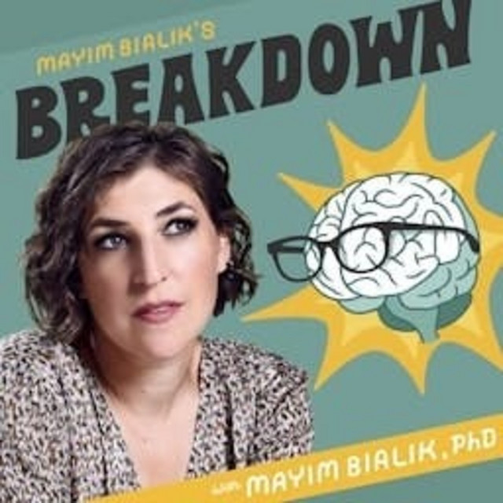

Curated Inspirations
The people and voices gathered here have each contributed something meaningful to my journey. Through their experiences, insights, conversations, and discoveries, they've offered new perspectives, encouragement, and reminders of what's possible when we remain curious and open to growth.
Some have helped me better understand the connection between mind and body; others have challenged the way I think, encouraged me to look inward, or reminded me that we're not alone in the experiences we navigate.
I share these resources in the hope that you might discover something here that resonates with you, sparks a new perspective, or offers a little encouragement along your own journey.
Jay Shetty
Former monk, bestselling author, and host of the #1 Health & Wellness podcast, On Purpose. On the podcasts and in his books, he shares his experience and practical, grounded wisdom on mindfulness, self-worth, and living with intention.
- Official Website jayshetty.me
- Books:"Think Like a Monk" (2020) & "8 Rules of Love" (2023)
- Watch & Listen: Spotify (On Purpose) • YouTube
- Socials: Instagram • Facebook • TikTok • X
Dr. Bruce Lipton
Stem cell biologist and pioneer in epigenetics whose work bridges cellular science and consciousness. Through his work, he has inspired a new understanding of how our beliefs and environment can shape our biology, health, and overall well-being.
- Official Website : brucelipton.com
- Books: "Beyond Darwin" (2026),"The Biology of Belief" (2005),"Spontaneous Evolution" (2010),"The Honeymoon Effect" (2013), and many more.
- Watch & Listen: Spotify (Audiobooks & Interviews) • YouTube
- Socials: Instagram • Facebook
Anita Moorjani
After a profound near-death experience during end-stage lymphoma and a remarkable recovery, Anita shares deeply comforting insights on self-love, releasing fear, and living authentically. She is now a bestselling author and international speaker, inspiring audiences worldwide to embrace life fully.
- Official Website: anitamoorjani.com
- Books: "Dying to Be Me" (2012), "What If This Is Heaven?" (2016), Sensitive Is the New Strong (2021), and many more.
- Watch & Listen: Spotify (Audiobooks & Interviews) • YouTube
- Socials: Instagram • Facebook

Mayim Bialik’s Breakdown
Hosted by neuroscientist Dr. Mayim Bialik and Jonathan Cohen. Together they break down mental health myths, nervous system healing, and the big questions where science meets consciousness. Their guests include scientists, authors, and thought leaders who share insights on mental health, trauma, and personal growth.
- Official Website: bialikbreakdown.com
- Books: "Beyond the Sling (2012)", "Girling Up" (2017), "Boying Up" (2018), and more.
- Watch & Listen: YouTube • Apple Podcasts
- Socials: Instagram (@bialikbreakdown)
ADHD Chatter (Alex Partridge)
Hosted by Alex Partridge, ADHD Chatter features honest, validating conversations with experts, creators, and everyday people navigating neurodiversity, masking, emotional regulation, and late diagnosis. His work provides a safe space for listeners to explore their own experiences and find community, understanding, and practical strategies for thriving with ADHD.
- Official Website: adhdchatter.co.uk (Book: Now It All Makes Sense)
- Books: Now It All Makes Sense (2023) • ADHD Chatter: A Guide to Understanding and Thriving with ADHD (2024)
- Watch & Listen: Spotify • YouTube • Apple Podcasts
- Socials: LinkedIn • Instagram • TikTok • Facebook
Discussion & Stories